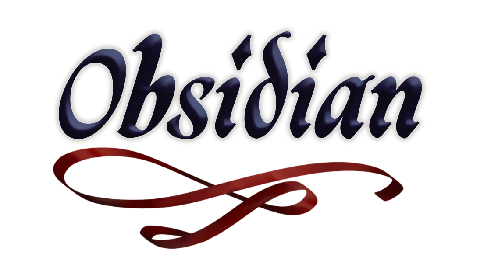
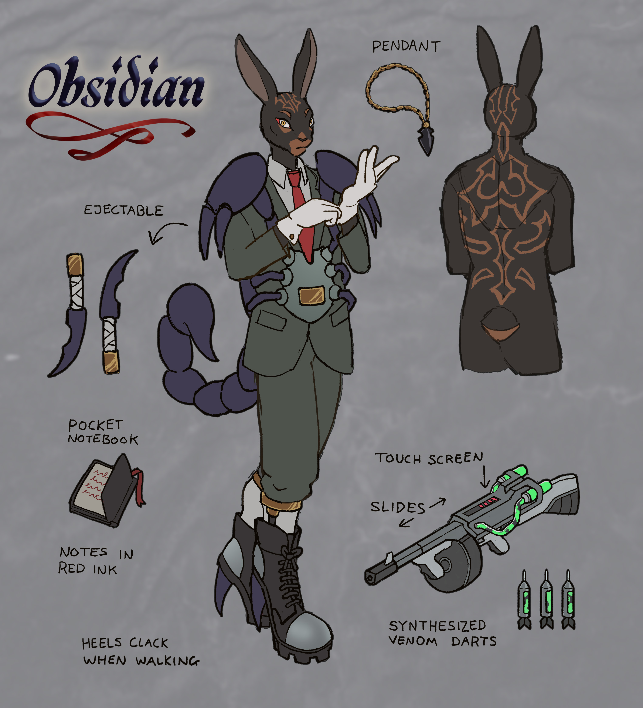
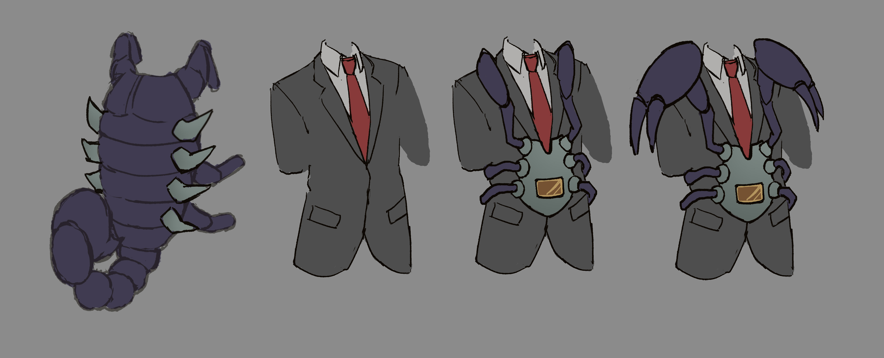
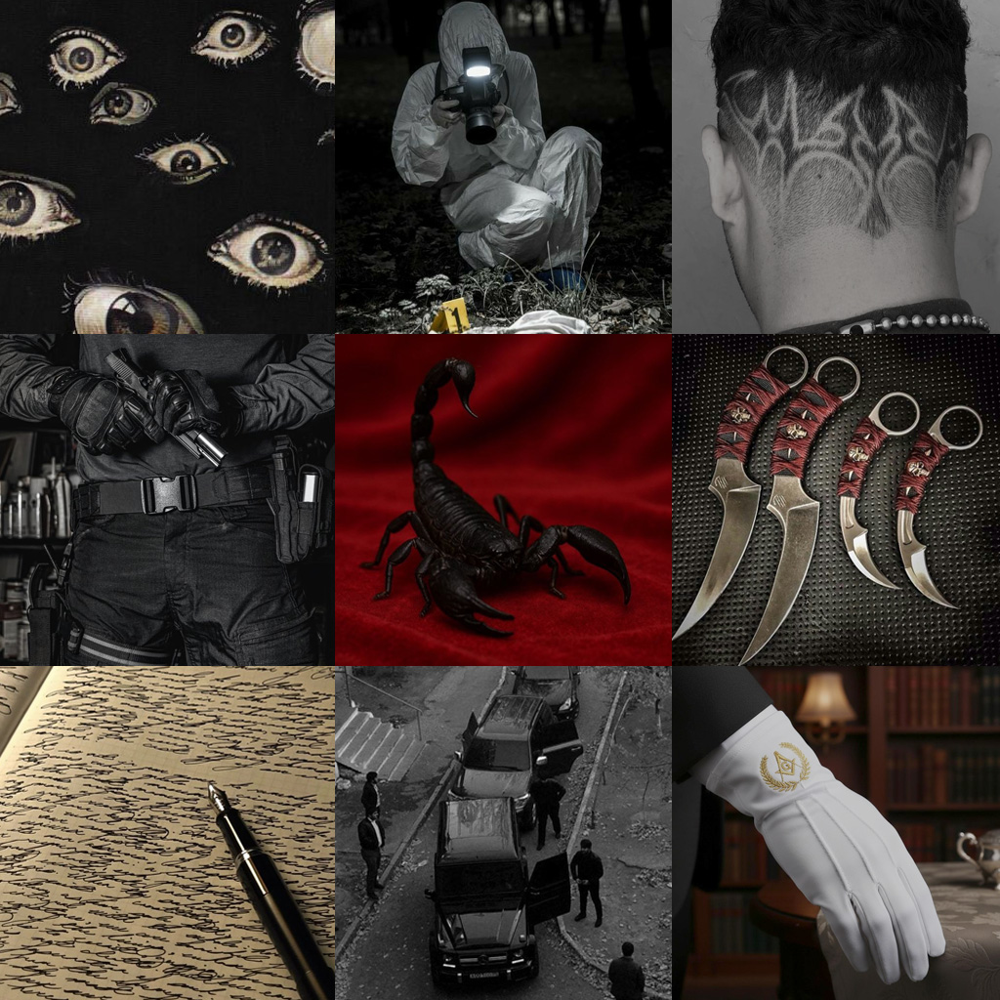
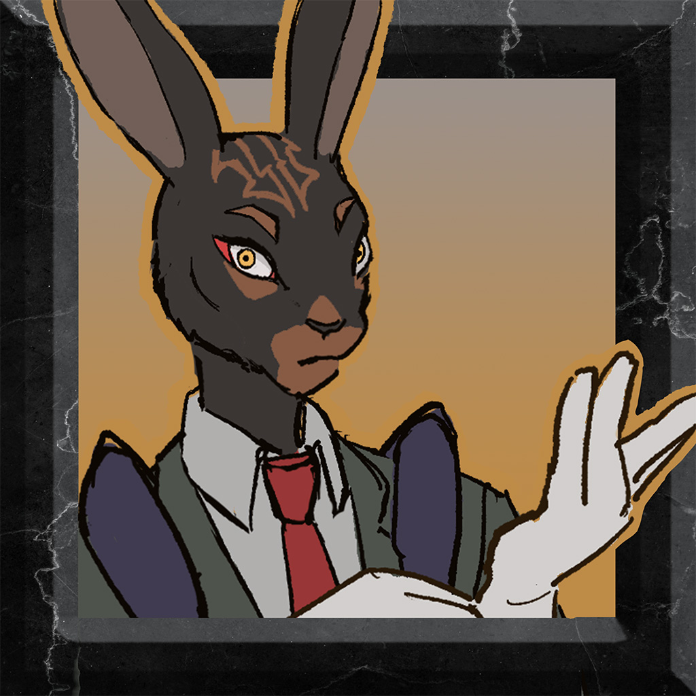

Observation: Obsidian - J.N.E.'s highest ranking mercenary.
He is obsessive, paranoid and meticulous. Like all Network Maintance Crew, he commited a crime - his
was to very publically murder a notorious member of a rival scorpion clan. He now wears it's skin as
trophy armour. Since insect exoskeletons/molts are legally classifed as possesions and not corpses,
it cannot be confiscated from him. He did this with the full intention of getting arrested - for he is obsessed with
J.N.E's raw inorganic power and determined that this was the most effective way to get closer to
her. She has physcial power earned through endurance as opposed to the inherited wealth he was
raised surrounded by.
J.N.E. views him as weak but effective.
His family want vengance for discracing them. He was supposed to become their next leader.
Family members: Tanzanite (younger sister), Chalcedony (mother).
Species: Belgian Hare



See more art on Toyhouse :) click here to redirect to ToyHouse.